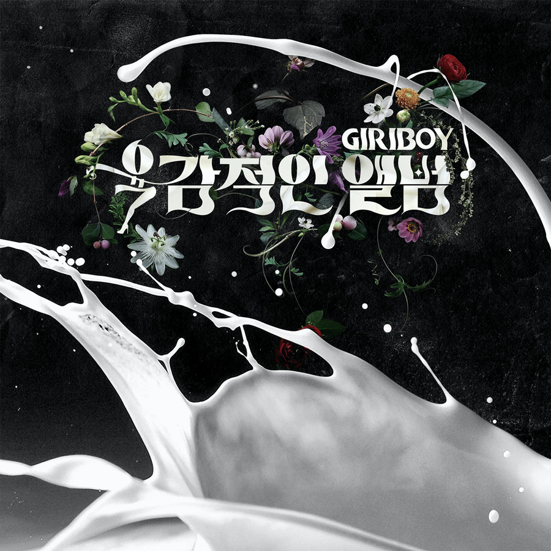

그림 그리는거 좋아하고 노는거 좋아하는 평범한 학생의 삶을 살다가 어둠의 경로를 통해 작곡툴을 받아 첫 번째 노래를 만든것이 음악 활동의 시작이라고 한다. 그후 실용음악학원을 다니며 작곡을 배웠다고한다.[6] 래퍼로 전향한 이유는 본인이 노래를 못 불러서(...)[7][8] 그래도 어렸을 적부터 음악 장르에 대한 편견이나 부심이 없었던터라[9] 여러 음악을 폭 넓게 듣고 만들었다고 한다. 지금도 그 영향이 계속 되어서 기리보이의 음악을 들으면 힙합보단 '팝'과 같이 들린다.[10]그렇게 음악을 만들다가 어글리 덕의 귀에 들어가게 되고 스윙스에게 추천하면서 저스트뮤직에 들어가게 된다. 기리보이 본인이 당시 그랜드라인과 저스트 뮤직 중 어디에 들어가야 할지 고민했다고 한다. 하지만 그랜드 라인은 본인을 신경써줄만한 여력이 없다고 판단하며 이름의 뜻이 끌리는 저스트 뮤직을 선택했다고 한다. 이 때 발표한 곡이 뮤비에서 깨알같은 스윙스의 연기가 돋보인 첫 싱글 You Look So Good To Me다. 이후 같은 크루에 있는 긱스의 릴보이와 콜라보한 한잔해요 자기노래지만 듣지 말란다, 얼굴에 다 써있네요 등 싱글을 발표하다가 2012년 6월, 12월에 치명적인 앨범 시리즈를 내고, 2집 성인식, 디지털 싱글 외롬적인 4곡등 활동을 계속 이어나간다.
음악 유통업체인 멜론과 인터뷰를 한적이 있는데 본인은 SM의 프로듀서인 히치하이커를 보고 작곡가를 꿈꿔왔다고 한다. 그래서 그런지 그가 영향받은 5곡중 히치하이커 프로듀싱의 f(x) 빙그르를 말하기도 하였다. 자세한 것은 링크 참조.
이후 피키 캐스트와의 인터뷰에서 엑소에게 곡을 주고 싶다고 하고 신화에게 영향을 받은것 히치하이커 등 여러 이야기를 한다.SM의 여러 뮤지션들과 작업을 하고 싶다고.